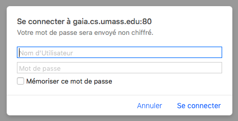
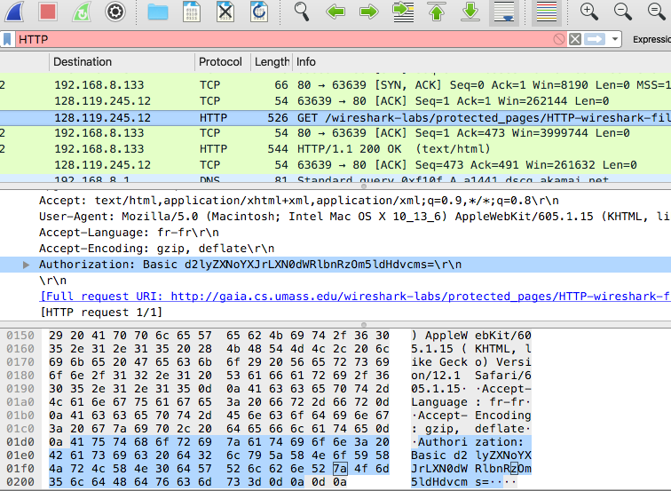
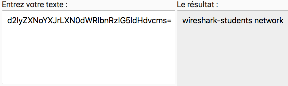
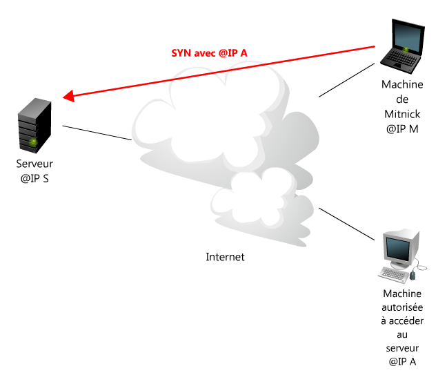
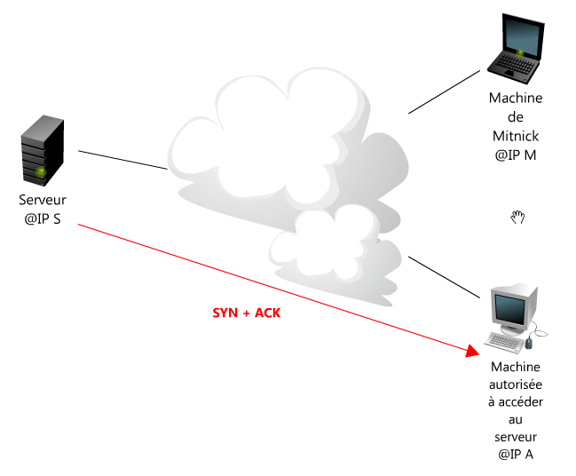
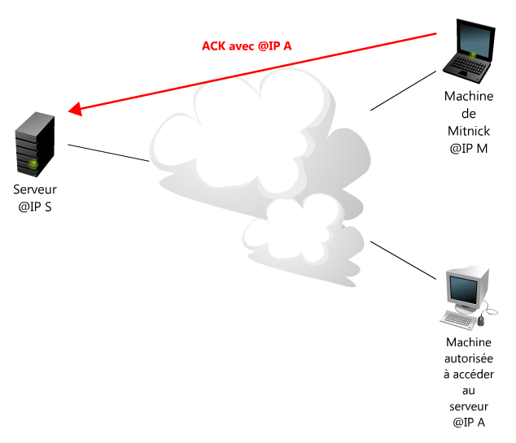

securite des communications
sécurité sur internet (concerne la spécialité NSI)
Espionner le réseau : wireshark
Wireshark est un programme de type sniffer qui écoute sur le réseau, intercepte toutes les trames reçues par votre carte réseau, et les affiche à l’écran. Lors d’une requete vers un serveur, comme google ou tout autre page demandée, l’ordinateur echange plusieurs trames. Si on observe le détail de l’une d’entres elles, un logiciel comme wireshark permet d’en séparer les différentes couches. Voyons un exemple :
un site non sécurisé : http
Le protocole proposé pour la navigation sur internet est actuellement https. Il s’agit d’une extension du protocole http; il a l’avantage d’être sécurisé. (Les informations échangées sont chiffrées).
La page suivante est celle d’un site internet demandant de s’identifier pour acceder aux ressources. Mais ici, l’URL montre qu’il s’agit d’une connexion non chiffrée, en http: http://gaia.cs.umass.edu/wireshark-labs/protected_pages/HTTP-wireshark-file5.html

réseaux d'ordinateurs
Le mot de passe : network
Une fois le cache du navigateur vidé, on lance wireskark, on ouvre la page du site, on entre les identifiants et on lance la requête à l’aide de la validation du questionnaire.
On stope alors la capture par wireshark.

réseaux d'ordinateurs
Cette chaine de caractères, en apparence encodée n’est pas du tout chiffrée. Il s’agit juste d’un encodage classique dans un format Base64.
En utilisant un décodeur de Base64, (comme par exemple http://www.base64decode.org/, cette suite de caractères correspond à … wireshark-students network

information transportée par la trame
Ce logiciel, wireshark, connait la façon dont une trame est structurée. Il décompose cette trame en ses différentes parties. Ici, la requete envoyée par le navigateur utilise un protocole HTTP. La trame envoyée vers le serveur est constituée par des données binaires assemblées au cours de différents protocoles complémentaires et nécessaire pour assurer la bonne transmission des informations. Ces données transportent des informations relatives aux adresses de l’emetteur (client), du recepteur (serveur). Les différentes parties (ou sequences) correspondent à différentes couches du modèle appelé OSI. Ces couches sont issues d’un cloisonnement des technologies et protocoles utilisés.
Approfondir
La securité et les failles de securité du modèle OSI
Pour réaliser une attaque sur notre système informatique, un pirate a besoin d’établir une connexion : c’est à dire une communication. Pour réaliser cela, il doit :
- (couche 3) connaitre l’adresse IP de notre machine
- (couche 4 et couche 3) avoir la liste des ports ouverts sur notre machine : pour cela, le pirate doit réaliser un scan de port de notre machine cible, sans se faire repérer (avec l’identité d’un autre par exemple). Pour réaliser cela, il va devoir faire communiquer une une machine tierce (C) avec notre machine pour savoir si celle ci a échangé des données. Si le numéro d’IPID (couche 3 datagramme IP) de la machine C augmente, c’est qu’une connexion a pu être etablie avec notre machine. Et il peut en déduire que notre port était bien ouvert.
- (couche 2) connaitre le numéro d’ISN de notre machine : Pour initialiser sa connexion, il doit envoyer un SYN en se faisant passer pour A.
Principe d’une attaque avec usurpation d’id: (blind IP spoofing)
Pour initialiser sa connexion, il doit envoyer un SYN sur un port ouvert en se faisant passer pour A.

SYN1

SYN2

SYN3
echo ++ > /etc/known_hosts
Ce ficher est celui sur lequel se base l’application rlogin pour identifier les adresses IP qui auront le droit de se connecter sans mot de passe. En mettant ++ dedans, il autorise toute adresse IP, donc la sienne, à se connecter au shell en root à distance.
Pour finir: Il faut juste faire taire la machine A pour qu’elle n’envoie pas le RST et que le serveur ne ferme pas sa connexion. L’idée est d’envoyer énormément de segments SYN sur le port ouvert d’une machine pour que celle-ci ne puisse plus répondre. Si l’on se contente d’envoyer un SYN sans répondre au SYN + ACK qui va suivre, le serveur en face va allouer des ressources pour attendre notre réponse jusqu’au dépassement d’un délai d’expiration.
Les ISN sont aujourd’hui aléatoires, donc ils ne sont plus prédictibles. De plus, la mise en oeuvre de firewalls sur les machines et les réseaux protège aussi souvent leurs accès.
retour aux pages précédentes
- Retour vers le modèle OSI (1ere NSI)
- Retour vers la page Reseaux
- Retour vers internet (Généralités)
- TP simulation d'un reseau
Liens
- cours sur les reseaux et protocoles : openclassroom, nouvelle version
- attaque du blind spoofing: openclassroom